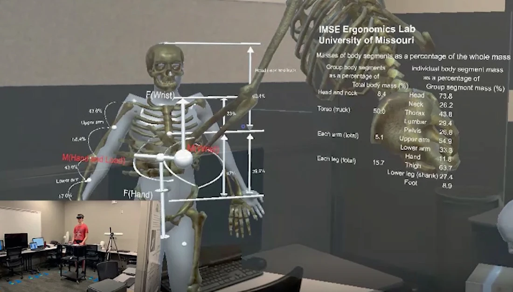
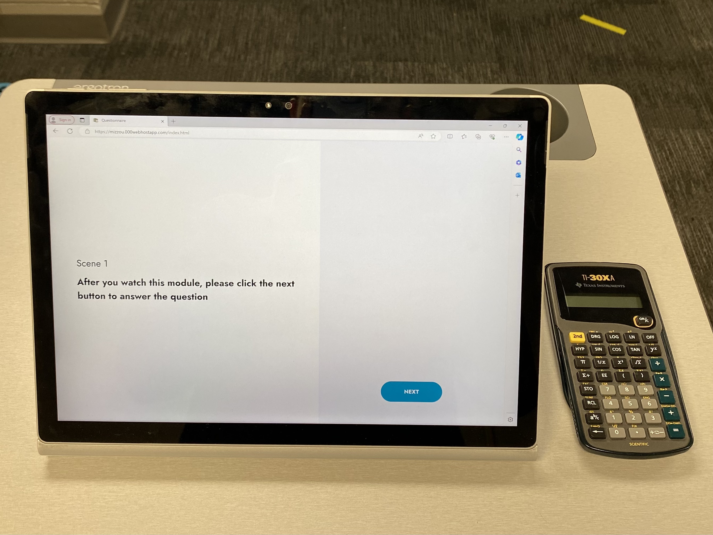

To examine how attention is distributed during AR learning sessions via eye-tracking technology, we employed a tailored eye-tracking device provided by Ergoneers, which we attached to the HoloLens. This setup enabled us to gather eye-tracking data from participants while they were engaged with the HoloLens.
Analyzing Attention Allocation During Learning with Eye-Tracking
March 2024

In our Fall 2022 experiments, participants were required to respond to a question on a test paper following each AR module. Moving forward, for the Fall 2023 experiments, we have transitioned from using test papers to a quiz website with metacognitive monitoring feedback, enabling participants to submit their answers via a touchscreen.

We created a program to establish a connection between the quiz website, the application that controls the positioning sensor, and the application that controls the eye-tracking device. When the AR module is activated, the program collects five seconds of eye-tracking data from the participant as a baseline sequence. When the participant clicks the "Next" button on the quiz website to start answering the question, the program collects another five seconds of eye-tracking data from the participant as a comparison sequence. We input these two sequences into the Dynamic Time Warping (DTW) algorithm to obtain the difference between them. If this value is higher than the threshold we defined, it means that the two sequences are different. The program will play a sound to remind the participant to pay attention.